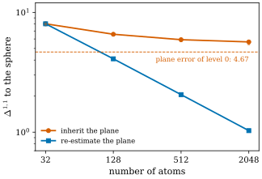

50.6 Assessment
Goals
- 논문 §8의 세 수준(thin covariance, compatibility, identifiability)을 구분하고, §7의 각 실험이 어느 수준의 증거인지 말할 수 있다.
- 논문이 밝힌 한계와 우리의 평가(이론의 깊이, 정의의 빈칸, 증거의 강도, 상속된 plane의 문제)를 근거와 함께 말할 수 있다.
- 이 묶음의 다른 세 논문(BLM17, BLM22, GeoSplat)과 이 논문의 관계를 우리의 해석으로 설명하고, 읽는 순서를 정할 수 있다.
Prerequisites
- 이 장의 앞 다섯 절. 특히 mass ledger(Definition 50.3.4), metric decomposition(Proposition 50.4.7), 실험의 수치(Section 50.5).
- 네 논문의 지도(Table 46.9.1).
Motivation
앞 절에서 논문의 모든 수치를 읽었다. 이긴 칸도 있고 이기지 못한 칸도 있었다. 이제 한 걸음 물러나 전체를 보자. 논문 스스로는 결과를 어떻게 정리하는가(§8–§10)? 그 정리는 수학과 실험이 실제로 보인 것과 맞는가? 그리고 이 논문은 Track 4의 다른 세 논문과 어디서 만나는가? 이 절에서는 논문의 주장, 우리의 해석, 우리의 평가를 계속 나누어 쓴다.
Three Levels (§8)
논문의 Discussion은 실험이 섞기 쉬운 세 수준을 갈라 놓았다고 정리한다(논문의 주장).
| level | what it decides | this chapter |
|---|---|---|
| thin covariance (one primitive) | Gaussian 하나가 plane을 갖는가. 보존되는 \(q_i\)가 없으면 densification에서 집합의 기하가 여전히 drift한다 | 50.2, 50.3 |
| compatibility (a field) | 국소적으로 surface로 실현할 수 없는 tangent·curvature field를 거부한다. 틀렸지만 realizable한 surface는 많이 허용한다 | 50.4 |
| identifiability (observation) | compatible class 안에서 ground truth를 고른다. depth, RGB-SfM support, 국소적으로 coercive한 rendering Jacobian이 필요하다 | 50.4, 50.5 |
DTU [Jensen14] 결과에 대한 논문의 해석도 이 구분을 따른다. anchor가 없으면 loss가 국소 accuracy는 개선하지만 completeness를 안정적으로 개선하지 못한다. 고정된 COLMAP support가 coverage 쪽으로 data-coercive한 신호를 더하면 같은 realizability 장치가 두 replication 장면에서 이득이 된다. 그 결과인 \(2.97\%\)의 replication gain은 분해의 관점을 검증하지만 논문의 주된 성능 주장은 아니다. 더 강한 주장은 asset layer의 동작이다. 인증된 기하는 편집할 수 있고 충돌에 정직하며, 불확실한 내용은 닫힌 mesh를 지어내지 않고 residual splat으로 남는다.
이 구분을 앞 절의 실험에 대 보면 다음과 같다(우리의 정리). smoke run의 thinness는 첫째 수준, sphere checkpoint와 Table 1의 comp. 행은 둘째 수준, Table 1의 depth oracle과 Table 2의 anchor와 §7.8의 Fisher는 셋째 수준의 증거다. Table 3, 4와 두 데모는 세 수준 위에 놓인 asset의 동작이다. 수학 쪽에서는 Proposition 46.8.2(plane의 안정성)와 mass ledger가 첫째, Bonnet 정리가 둘째, (11)의 둘째 항과 restricted Jacobian이 셋째 수준이다.
Limitations and Conclusion (§9–§10)
논문이 스스로 밝힌 한계는 다음과 같다(논문의 주장).
- sparse RGB-only 학습은 ground truth surface를 안정적으로 식별하지 못한다.
- local patch chart와 compatibility 진단은 전역 topology를 보장하지 않는다.
- asset이 일부러 보수적이어서 watertight mesh 대신 열린 certified patch와 residual splat을 낸다. 그래서 여러 장면에서 coverage가 2DGS, SuGaR, Poisson보다 낮다.
- 현재 증거는 full-budget surface-GS baseline에 대한 state-of-the-art 복원 주장을 정당화하지 않는다.
- 내보낸 GLB는 asset의 뼈대이지 production-ready asset이 아니다. 완전한 UV atlas material baking, renderer round-trip 검증, engine 쪽의 physics 검증, 더 풍부한 편집 단위가 남아 있다.
또 논문은 2DGS, SuGaR, GeoSplatting(참고문헌 [14], Ye et al.) 같은 surface-GS 시스템에 대한 RGB-only 우위를 주장하지 않는다고 적는다. anchor 없는 DTU 증거가 그 주장에 반하기 때문이다. 진짜 surface로의 무조건적 수렴도 주장하지 않는다. 이론의 명제는 sampling, tangent, mass, 관측 증거의 가정에 조건부이고, 공학적 future work는 따로 있다. full renderer round-trip(PSNR/SSIM/LPIPS), 완전한 UV atlas baking, 실제 depth로의 multi-seed 검증, Gauss–Codazzi 항 전체를 쓰는 학습이다. 마지막 두 항목으로 보아 실제 depth를 쓴 multi-seed 검증은 아직 없고, Gauss–Codazzi 항은 실험 단계다(§6도 Gauss compatibility 항을 “experimental”이라 부른다).
결론(§10)은 앞의 내용을 다시 모은다. mass를 opacity에서 떼어 내 refinement를 넓이의 암묵적 변화가 아니라 transport 문제로 만든 것, varifold를 tangent를 아는 진단과 평가 거리의 공통 언어로 쓴 것, DTU 세 장면에서 본 asset의 동작(patch로 정의한 편집의 누수 없음, texture round-trip, mesh 추출보다 적은 false surface, 단순화 뒤에도 유지)이 그 내용이다. 같은 결과가 한계도 보인다는 점, 곧 인증이 coverage를 낮추고 local realizability만으로는 sparse RGB에서 ground truth가 정해지지 않는다는 점도 다시 적는다. 다음 단계로는 compatibility를 복원의 목적함수 전부로 삼기보다 더 강한 관측 증거와 asset rendering의 검증을 꼽는다. 초록의 마지막 문장이 논문의 입장이다. “This draft anchors a conservative claim: certified hybrid Gaussian assets, not state-of-the-art RGB-only reconstruction.”
Our Assessment
여기부터는 우리의 평가다. 먼저 사실부터 적자. 이 논문은 단독 저자(Peking University)의 preliminary draft(arXiv v1)이고, 게재처 표기가 없으며, 실험은 DTU 세 장면뿐이고, 공개 코드의 주소가 본문에 없다. 이것은 결함이라기보다 읽는 방식을 정하는 조건이다. 아래의 평가는 v1에 대한 것이다.
The mathematics
논문의 수학적 결과를 모으면 다음과 같다.
| result | proof | what we found |
|---|---|---|
| forward consistency (7) | cell quadrature, triangle inequality | 맞다. \(\Delta^{1,1}\)에서 order \(h\)는 날카롭고 상수는 실제의 약 \(2\)배. 학습된 장면에서 잰 적은 없다(Example 50.2.5) |
| Prop. 1, (9) | mass 보존과 Lipschitz | 맞다. barycenter는 smooth test function에서, tangent moment는 상속 조건으로 작동한다(Remark 50.3.3) |
| merge | 없음(말로만) | plane moment의 오차가 normal의 퍼짐의 제곱 정도(Proposition 50.3.6, 우리) |
| prune (10) | transport | 맞다. varifold 판 (50.3.8)은 우리가 더했다. floater의 mass까지 보존한다(Proposition 50.3.8) |
| decomposition (11) | triangle inequality | 맞다. 내용은 개념적이다(Proposition 50.4.7) |
| kernel bound (12) | Jensen, \(1 - e^{-t} \le t\) | 맞다. 상수는 정확히 \(1\). 역은 성립하지 않는다(Proposition 50.4.10) |
| five residuals | 이름만 | 공식이 없다. 우리 정식화에서는 curl = antisymmetry이지만 논문의 수치는 다르다(Proposition 50.4.3) |
| coercivity, identifiability | 진술만 | 상수나 정리가 없다. §7.8은 appearance를 고정한 판을 계산한다(Definition 50.4.14) |
증명된 것은 모두 맞고 모두 짧다. 저자도 (7)과 (11)을 “triangle inequality뿐”이라고 쓴다. varifold의 역할도 제한적이다. 이 논문에서 varifold는 mass의 장부와 평가 거리로만 쓰이고, varifold 이론의 중심 도구인 first variation, generalized mean curvature, BLM의 approximate curvature는 쓰이지 않는다. curvature 진단은 MLS chart 위의 고전 미분기하다. 그래서 제목의 “Varifold-Conservative”는 “mass와 moment를 보존하는 Dirac 합”에 가까운 뜻이다. 가치는 정리의 깊이가 아니라 관점에 있다. “opacity는 넓이가 아니다”와 “realizable은 identifiable이 아니다”라는 두 문장은 단순하지만 3DGS의 densification과 복원을 생각하는 데 유용한 관점이다.
Inherited planes freeze the plane error
Proposition 1의 tangent moment 보존은 실제로는 “자식이 부모의 plane을 물려받는다”이다(Remark 50.3.3). 이것이 언제나 바람직한가? 굽은 surface에서 자식이 부모 주위로 퍼지면, 자식 자리의 진짜 tangent plane은 부모의 것과 다르다. 그러면 split을 반복해도 plane의 오차 \(\varepsilon_T\)가 줄지 않는다. 직접 재 보자.
Example 50.6.1 (conservative split on the sphere, inherited against re-estimated planes). unit sphere의 \(n_\theta = 4\) tiling(원자 32개, Example 50.2.5)에서 출발해 level \(k\)마다 모든 cell을 \(2^k \times 2^k\)개의 작은 cell로 나누고 작은 cell마다 자식 하나(\(q_j = A(C_j)\))를 둔다. 두 모형을 비교한다.
- inherit: 자식은 작은 cell의 가운데 점을 부모의 tangent plane에 projection한 자리에 놓고, \(\sum_jq_j\mu_j = q_i\mu_i\)가 되게 recenter하며, 부모의 plane을 그대로 갖는다(Proposition 50.3.1의 세 보존을 모두 만족한다).
- re-estimate: 자식은 작은 cell의 가운데 점(sphere 위)에 놓이고 그 점의 진짜 tangent plane을 갖는다.
sphere까지의 \(\Delta^{1,1}\)(Frobenius 거리, cell 적분의 위 bound와 test function \(\min(1, \text{원자까지의 거리})\)의 아래 bound)는 다음과 같다.
| atoms | inherit | re-estimate |
|---|---|---|
| 32 | 8.02 / 7.95 | 8.02 / 7.95 |
| 128 | 6.57 / 6.54 | 4.09 / 4.09 |
| 512 | 5.92 / 5.78 | 2.05 / 2.05 |
| 2048 | 5.67 / 5.44 | 1.03 |
re-estimate는 level마다 거리가 반이 된다. inherit는 \(5.4\)–\(5.7\)에서 멈춘다. level 0의 plane 오차 \(\sum_i\int_{C_i}\norm{P(x) - P_i}_F\,dA = 4.67\)이 그대로 남기 때문이다. 이것은 어느 level에서나 성립하는 아래 bound로 만들 수 있다. plane만 보는 test function \(\varphi(x, S) = \min\big(1, \min_k\norm{S - P_k}_F\big)\)(\(P_k\)는 level 0의 plane 32개)는 Lipschitz 상수가 \(1\) 이하이고 \(\abs{\varphi} \le 1\)이며, 모든 자식이 이 plane 가운데 하나를 가지므로 inherit 장면에서 \(0\)이다. 그래서 \(\Delta^{1,1} \ge \int\varphi(x, P(x))\,dA = 4.67\)이고(가장 가까운 plane이 거의 언제나 자기 cell의 plane이라 plane 오차와 셋째 자리까지 같다), inherit 모형은 원자를 아무리 늘려도 \(4.67\) 아래로 가지 못한다. bound (7)로 말하면 \(\varepsilon_T\)가 level 0의 \(0.737\)(Table 50.2.1)에 머물러, \(h \to 0\)이어도 bound가 \(4\pi \cdot 0.737 = 9.26\) 아래로 내려가지 않는다.
Verification: verify/v-50-6-assessment.py
Figure 50.6.1이 이 표를 그린 것이다. 가로축은 원자의 수(log scale), 세로축은 sphere까지의 거리(log scale)다. 파란 선(re-estimate)은 기울기 \(-1/2\)의 직선으로 내려가고, 주황 선(inherit)은 주황 점선(level 0의 plane 오차)의 조금 위에서 평평해진다. 주황 점 아래의 짧은 막대는 아래 bound까지의 범위다.

이 결과가 Proposition 1을 틀리게 만들지는 않는다. 명제는 refinement 전후의 변화를 bound할 뿐, surface에 가까워진다고 말하지 않는다. 실제 학습에서는 split 뒤의 최적화가 자식의 rotation을 바꾸어 plane을 다시 맞출 것이다. 그러면 tangent moment의 보존은 깨지지만 기하는 좋아진다. 곧 “무엇을 보존할 것인가”는 refinement의 순간에 대한 규칙이고, 그 뒤의 학습이 무엇을 해야 하는지는 따로 정해야 한다. 논문은 이 둘의 관계를 말하지 않는다.
The strength of the evidence
- 규모. 실제 장면은 DTU 셋이고, Table 2는 둘(scan105는 사후 발견 장면이라 제외)이다. seed 반복과 신뢰구간이 없다. 평균 \(2.97\%\)는 두 수의 평균이다.
- 정의의 빈칸. \(q_i\)의 규칙, 다섯 residual의 공식, thinness와 \(r_{23}\), adapt. comp., Norm.의 단위와 통계량, “1% bbox”, ID area의 분모, \(\sigma\)와 \(\tau\), 각종 threshold가 없다(Section 50.5의 Warning). 그래서 대부분의 수치를 재현할 수 없다.
- collision 비교의 선택 효과. ours는 관측이 강한 부분집합만 내보내므로 floater가 낮은 것은 어느 정도 구성에서 온다. 같은 coverage에서의 비교가 없고, F1로는 2DGS가 모든 장면에서 앞선다. phantom probe와 Figure 1에 2DGS가 없다(Section 50.5).
- 편집 증거. patch로 정의한 target의 누수 \(0\)은 구성상 당연하다. 외부 target은 더 나은 증거지만 Manifold-GS 자신의 출력 위에서 골랐고, baseline은 proximity selection 하나다.
- 수치가 없는 주장. §7.1의 “ledger가 opacity-as-area보다 안정하다”와 §7.4의 SuGaR pilot에는 수치가 없다.
What the paper does well
- 범위를 정직하게 좁힌다. 0.271%의 실패, inconclusive 판정, Fisher 진단의 한계, coverage의 손실을 숨기지 않는다. 초록부터 “state-of-the-art 복원이 아니다”라고 쓴다.
- 평가를 고정한다. protocol에 version을 붙이고 threshold를 바꾸면 version이 바뀐 것으로 취급한다. 결과를 보고 기준을 고치는 일을 막는 좋은 습관이다.
- 개념을 분명히 나눈다. opacity와 mass, rendering과 geometry, realizability와 identifiability를 나누는 것은 3DGS를 asset으로 쓰려는 사람에게 바로 쓸모 있는 관점이다. mass ledger는 구현이 싸고(Section 50.3의 Application 상자) 효과가 보인다(Figure 50.3.2).
- source mapping. 원래 Gaussian에서 certified patch로의 명시적 대응이 편집과 collision proxy를 묶는다. watertight mesh에는 없는 구조다.
Relation to the Other Papers of Track 4
먼저 사실이다. Manifold-GS는 이 묶음의 다른 세 논문 [BLM17], [BLM22], [GeoSplat25]을 인용하지 않는다. varifold의 근거는 Simon의 강의록 [Simon83], compatibility의 근거는 do Carmo [dC]뿐이다. 참고문헌 [14] “GeoSplatting”(Ye et al., ICCV 2025)은 GeoSplat과 다른 논문이고, 저자 Boyang Li는 GeoSplat의 제1저자 Yangming Li와 다른 사람이다(Section 46.9). 아래의 연결은 모두 우리의 해석이다.
BLM17: discrete varifolds and the bounded Lipschitz distance
- 같은 것. Definition 1의 \(V_{\mathcal{G}}\)는 BLM17의 point cloud varifold(Def. 2.12)에서 \(x_i = \mu_i\), \(m_i = q_i\)로 둔 것이다. (7)의 test function class는 BLM17의 bounded Lipschitz distance(Def. 2.6)의 class이고, 증명의 구조는 BLM17 Lemma 6.1의 cell bound와 같다(Section 47.2, Lemma 47.6.1).
- 다른 것. BLM17은 tangent의 오차를 cell 위의 적분(\(L^1\))으로, Manifold-GS는 sup으로 잡는다. Grassmannian의 거리가 BLM17은 operator norm, Manifold-GS는 Frobenius norm이다. BLM17은 cell의 mass를 정확히 주므로 \(\varepsilon_q\)가 없다.
- 쓰지 않은 것. BLM17의 본론인 regularized first variation, approximate mean curvature와 그 수렴 정리, natural kernel pair(Section 47.3–47.5)는 쓰지 않는다.
- 더하는 것. point cloud varifold의 mass를 어디서 얻는지(opacity가 아닌 quadrature mass)와 refinement 아래에서 그것을 보존하는 장부다. BLM17의 수렴 정리는 근사 varifold가 \(\Delta^{1,1}\)에서 가깝다고 가정하는데, mass ledger는 densification 동안 그 가정이 얼마나 깨지는지 기록하는 도구로 읽을 수 있다.
BLM22: curvature of a measure
- 같은 질문. Manifold-GS의 compatibility는 “위치의 data와 tangent의 data가 한 surface에서 나온 것처럼 서로 맞는가”를 묻는다. BLM22는 같은 질문을 varifold 수준에서 약한 형태로 묻는다. tangent projection field의 미분이 second fundamental form을 주고 적분 항등식을 만족하는가이다(Hutchinson의 조건과 weak second fundamental form, Definition 48.3.7, Proposition 48.4.1). Manifold-GS는 같은 질문을 chart 위의 고전 미분기하로 묻는 셈이다. symmetry residual은 second fundamental form이 symmetric이라는 성질과 대응한다.
- 가정의 대응. BLM22의 근사 정리(Thm 6.11)의 가정은 mass의 근접(공마다의 상대 오차)과 tangent의 근접이고, Manifold-GS의 (6)의 \(h, \varepsilon_q\)와 \(\varepsilon_T\)와 같은 종류다. 다만 (6)은 전역 합의 형태이고, Thm 6.11은 \(C^2\) surface 근처에서 그 오차들이 \(0\)으로 가는 열과, 오차보다 천천히 줄이는 scale \(\varepsilon_h\)를 요구한다. (6)을 그런 국소 형태로 강화한 Gaussian varifold의 열이라면 BLM22의 근사 weak second fundamental form으로 수렴이 보장된 curvature를 계산할 수 있다(Theorem 48.5.9). Manifold-GS는 그렇게 하지 않는다.
- 더하는 것. varifold의 curvature 이론이 직접 다루지 않는 관측의 경고, 곧 realizable해도 identifiable하지 않다는 것이다.
GeoSplat: geometry as a prior
- 같은 출발점. 둘 다 Gaussian의 중심과 plane을 point cloud varifold로 읽고, normal뿐 아니라 curvature를 Gaussian 학습에 연결한다(Section 49.2, Table 49.2.1).
- 다른 목적. GeoSplat은 기하를 prior와 regularizer로 써서 novel view synthesis를 좋게 한다. curvature로 초기화하고 upsampling((49.3.5))하고 densification을 조절한다((49.3.9)–(49.3.10)). Manifold-GS는 기하를 보존 법칙과 인증에 쓰고, 목적은 asset의 export와 진단이다.
- 서로의 빈칸. GeoSplat의 varifold curvature 추정(Proposition 49.4.4)에서 원자의 가중치 \(m_j\)는 “a weight”라고만 되어 있다. Manifold-GS의 \(q_i\)는 바로 이 자리에 원칙 있는 값(보존되는 quadrature mass)을 준다. 반대로 GeoSplat의 curvature 추정은 Manifold-GS의 chart 기반 진단을 대신하거나 교차 검증할 수 있다. GeoSplat의 densification은 mass 장부가 없으므로, Manifold-GS의 눈으로 보면 densification마다 varifold의 mass가 바뀐다(평평한 곳의 upsampling이 mass를 여러 배로 만드는 예가 Example 49.7.1이다). Manifold-GS의 identifiability 경고는 GeoSplat류의 prior가 그럴듯하지만 틀린 surface로 끌 수 있다는 위험을 짚는다.
BLM22 쪽에서 본 같은 비교는 Remark 48.7.3에 있다.
읽는 순서. 네 논문은 BLM17(point cloud varifold와 \(\Delta^{1,1}\)) → BLM22(varifold의 second fundamental form) → GeoSplat(그것을 Gaussian Splatting에 prior로) → Manifold-GS(보존 법칙, 인증, asset으로) 순서로 읽는 것이 자연스럽다(Section 46.9). Manifold-GS는 넷 가운데 가장 응용 쪽이고 수학은 가장 가볍다. Definition 1과 bound (7)은 BLM17의 Def. 2.12와 Lemma 6.1을 알면 바로 읽힌다.
Summary
- 논문은 결과를 세 수준으로 나눈다. thin covariance(한 primitive), compatibility(field), identifiability(관측)이다. DTU의 \(2.97\%\)는 분해의 검증이고, 주된 주장은 asset layer의 동작이다(Table 50.6.1).
- 논문의 한계: RGB-only는 ground truth를 식별하지 못하고, 전역 topology를 보장하지 않으며, coverage가 낮고, state-of-the-art 주장이 없고, GLB는 production asset이 아니다. 결론은 “certified hybrid Gaussian asset이지 state-of-the-art RGB-only 복원이 아니다”이다.
- 우리의 평가: 증명은 모두 맞고 짧으며 가치는 관점에 있다. 정의의 빈칸과 작은 실험 규모 때문에 수치 대부분을 재현할 수 없다. 상속된 plane은 refinement로 plane의 오차를 줄이지 못한다(Figure 50.6.1). collision과 편집의 증거에는 선택 효과와 구성상의 당연함이 섞여 있다.
- 이 논문은 다른 세 논문을 인용하지 않지만, BLM17의 point cloud varifold와 \(\Delta^{1,1}\), BLM22의 curvature의 질문, GeoSplat의 varifold 가중치와 정확히 만난다(우리의 해석).
Chapter 50은 Track 4의 마지막 장이다. 다시 처음으로 돌아가려면 Section 46.9의 네 논문 지도에서 다른 장을 고르면 된다.
Quick check
Exercise 50.6.1 ★ 다음 실험을 §8의 세 수준(thin covariance, compatibility, identifiability) 가운데 어디의 증거로 읽어야 하는지 정하여라. (a) smoke run의 median thinness \(0.371 \to 0.299\). (b) sphere checkpoint의 Codazzi residual \(0.503 \to 0.057\). (c) Table 1의 depth oracle 행. (d) Table 2의 anchor. (e) §7.8의 Fisher 분류.
Solution
(a) thin covariance. Gaussian 하나가 납작해지는지를 본다. (b) compatibility. normal field가 support와 모순 없는지를 본다. (c), (d), (e) identifiability. depth, SfM support, rendering Jacobian이라는 관측의 정보가 ground truth를 고르는지를 본다. (b)가 좋아져도 (c)–(e)에 대해서는 아무것도 말하지 않는다는 것이 (11)의 요점이다.
Exercise 50.6.2 ★ 자식이 부모의 plane \(P_i\)를 물려받는 split을 반복하면, 부모 cell \(C_i\)의 점 \(x\)에 배정된 자식의 plane은 언제나 \(P_i\)다. 그러면 (6)의 \(\varepsilon_T = \sup_x\norm{P(x) - P_\text{child}}_F\)와 \(\sum\int\norm{P(x) - P_\text{child}}_F\,dA\)가 split으로 줄지 않음을 보여라. Example 50.6.1에서 이 값은 얼마인가?
Solution
cell \(C_i\)를 작은 cell로 나누어도 각 \(x\)에서 \(\norm{P(x) - P_\text{child}}_F = \norm{P(x) - P_i}_F\)는 그대로이므로 sup과 적분이 split 전과 같다. sup은 \(n_\theta = 4\)의 \(\varepsilon_T = 0.737\), 적분은 \(4.67\)이다. 위치의 오차 \(h\)는 줄어도 이 항이 남아, bound (7)은 \(4\pi \cdot 0.737 = 9.26\) 아래로, 실제 거리는 \(4.67\) 아래로 내려가지 않는다.
Verification: verify/v-50-6-assessment.py
Exercise 50.6.3 ★★ conservative split을 고쳐 mass와 barycenter는 정확히 보존하되 자식의 plane을 자기 자리에서 다시 추정한다고 하자. Proposition 50.3.1의 (a), (b), (c) 가운데 무엇이 남고 무엇을 잃는가? unit sphere에서 자식이 부모에서 거리 \(r\)(작다)에 있으면 bound (9)의 plane 항은 대략 얼마인가?
Solution
(a)는 남는다. (b)는 잃는다. 자식의 plane이 서로 다르면 \(\sum_jq_jP_j \ne q_iP_i\)이다(Exercise 46.8.4). (c)의 bound는 여전히 성립하지만 plane 항 \(\sum_jq_j\norm{P_j - P_i}_F\)가 \(0\)이 아니다. unit sphere에서 거리 \(r\)만큼 떨어진 점의 normal은 각 \(\approx r\)만큼 기울어 있으므로 \(\norm{P_j - P_i}_F = \sqrt2\sin(\text{angle}) \approx \sqrt2r\)이고, plane 항은 대략 \(\sqrt2q_ir\)로 위치 항 \(q_ir\)의 \(\sqrt2\)배다. 한 번의 변화는 조금 커지지만, Figure 50.6.1처럼 반복하면 surface에 가까워진다. 보존과 수렴 사이의 선택이다.
Verification: verify/v-50-6-assessment.py
Exercise 50.6.4 ★★ 논문이 주장한 여섯 기여(Table 50.1.1) 각각에 대해 그것을 지지하는 이 장의 결과나 논문의 수치를 하나씩 들고, 가장 약하게 지지된 기여가 무엇인지 근거와 함께 말하여라.
Solution
한 가지 답이다. (1) Gaussian→varifold 해석: Definition 1과 bound (7)(Proposition 50.2.3). (2) conservation 규칙과 안정성: Proposition 1과 (10)(Proposition 50.3.1, Proposition 50.3.8). (3) realizability 진단: sphere checkpoint(Table 50.5.2). (4) hybrid asset export: Table 3과 외부 target 편집(Table 50.5.7). (5) frozen benchmark: Table 3, 4와 단순화(Table 50.5.9). (6) RGB-only의 감사: §7.3의 \(0.271\%\)와 Table 1. 가장 약한 것은 (3)이다. residual의 공식이 없고, 유일한 정량 결과가 같은 MLS support로 만든 sanity check이며, 우리 정식화와 맞지 않는 수치(symmetry와 curl)가 있다. (5)도 장면 셋, seed 없음이라는 점에서 약하다.